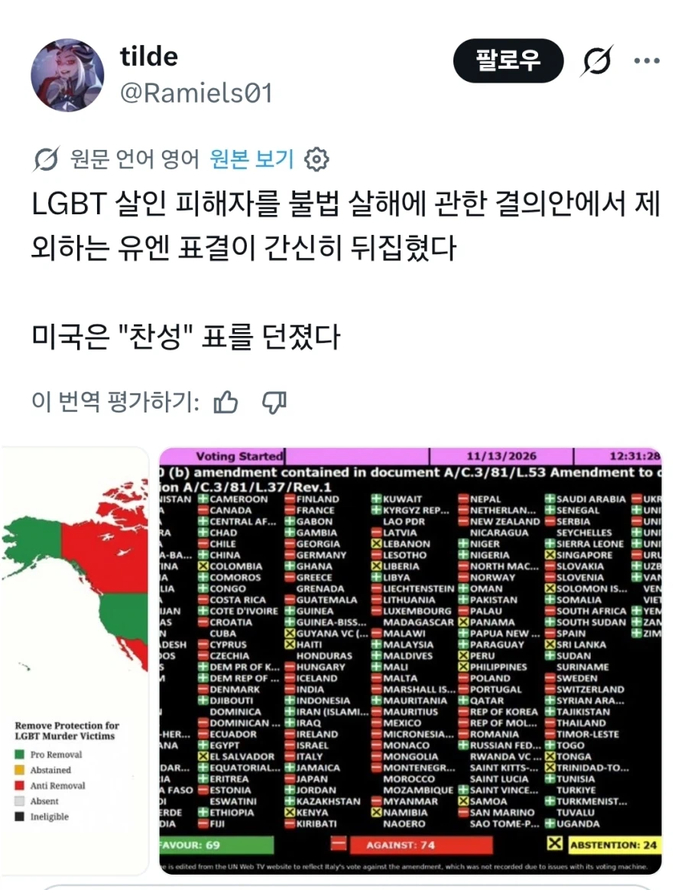
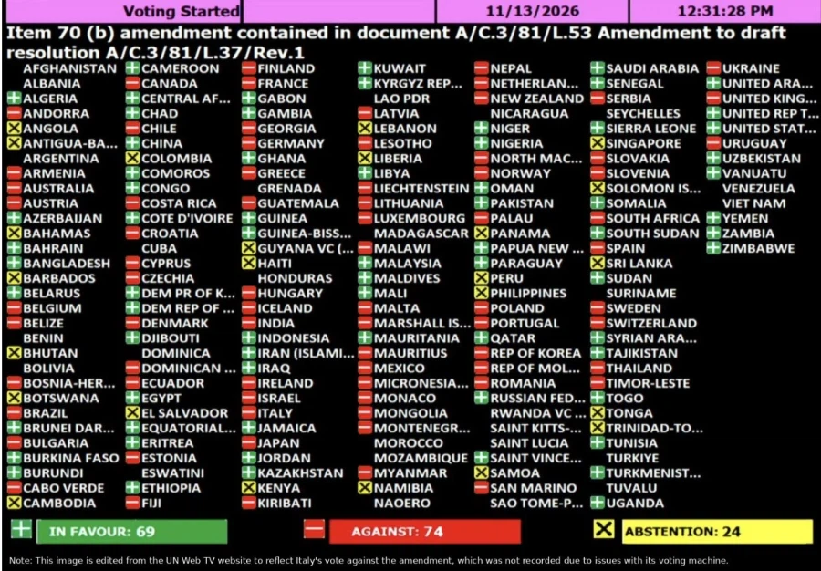

세줄요약
이슬람 국가들을 필두로
성소수자 보호 문구 삭제안을 UN 표결로 내걸었는데
중국, 러시아, 미국 등이 찬성함
...?


세줄요약
이슬람 국가들을 필두로
성소수자 보호 문구 삭제안을 UN 표결로 내걸었는데
중국, 러시아, 미국 등이 찬성함
...?
명예살인 ㅇㅈ?
도람푸는 찬성할 처지가 못될텐데ㅋㅋㅋㅋ
찬성국가들 개 병신국가들밖에없ㅋㅋ어… 미국?
어허 미합"중국"
한국 인권관련 정서는 일본,유럽 따라가니까 그렇다쳐도
러시아하고 정서 비슷한 동유럽도 다 반대 던지는건 좀 의외네. 인도도 그렇고
저 나라들도 저건 좀 아니지 싶었나ㅋㅋ
아니 그니까 동유럽은 찬성한 미국,러시아랑 다르게 반대표 던졌잖아.
막심은 감옥에서 자살로 뒤졌을때도 스스로한테마저 물리치료 하고갔다 조롱당한거 보면 걍 남일이니까 하던 유머 밈 같기도
앗 잘못 읽었음 ㅋㅋㅋㅋㅋ ㅈㅅㅈㅅ
근데 보면 벨라루스나 이런데들은 찬성 던지고 그럼요. 글고 eu회원국인데 저거 찬성 걸면 ㄹㅇ 골때리는 상황 처해질거임.
당장 동유럽쪽은 eu지원금 큰데 피데즈 집권 당시 헝가리처럼 eu지원금 압수 걸리면 힘들거라.
A-GAYS가 트럼프 행정부에서 중요한 위치아닌가
테크파시스트들도 게이가 많고
개인적으로 동성애자를 긍정하진않지만 이건 이슬람이 이슬람할라는거같은데
UN에서 원래 성소수자들은 언론인,원주민,종교소수자 등과 더불어서 살해위협 높은 그룹으로 지정시켰는데
이집트의 이슬람 협력기구(OIC)에서 성소수자만 빼야한다고 수정 요구해서 투표한거라
이슬람식 율법 관련 투표라 보는게 맞긴함.
이슬람국가들은 거의 동성애자 사형까지 가능함.
똥꼬게이들은 무자비하게 강간하고 보호의 대상에서 제외한다!
심지어 한국하고 인도도 반대표 던졌는데 ㅋㅋㅋㅋ
옳은일 ㅋㅋ
...?
근데 역설적으로 남자 따먹는 국가들이 이슬람국가들 아님?ㅋㅋㅋㅋ 페도남창도 운영한다며;
자기실현적 예언이엇던 거임
팀쿡을 살해할 생각인가
시발 어디가 블루팀인데
그딴거는 처음부터 없었다고
걍 시발 웃긴데 찬성하죠?
게이레즈를 보호할 필요도 보호안할필요도 있는건가?
성소수자가 장애인도아니고 그냥 평범한 시민1인데
그건 인권,치안 다 정상작용 하는 선진국 기준으로만 본 판단이고,
아직 이슬람 국가들이나 아프리카,구소련계 국가들은 동성애자,트젠이란 이유만으로 법적사형, 사적살해, 인권유린 당하는 사례들 많은거 보면 국제기구 인권기준 상 필요하겠지.
아직 미국,남미 같은데마저도 LGBT 혐오범죄 간간히 나오기도 하고
이슬람맘들 다 어디감
러시아 파라과이 벨라루스 미국 의문의 샤리아법행...
노머고 수준 www
너 같은 애들도 말이지
왜?
여러분 이분을 보세요, 꼴에 사람이라고 꾸역 꾸역 살지않습니까? 용기를 가집시다
너도 스카이 따라가라
미중러 연합 든든하다 ㅋㅋㅋㅋㅋㅋㅋ
게이면 죽여도 된다고 주장한건 아니네
====
이집트의 공식 주장은 “성소수자를 보호 대상에서 빼자”가 아니라, “모든 사람을 보호하되, 회원국 간 합의가 없는 ‘성적 지향 또는 성별 정체성’이라는 표현은 특정해서 쓰지 말자”는 것이었습니다. 이집트 대표는 이 표현이 논쟁적이고, 이를 고집하면 초법적·자의적 처형을 막자는 결의안의 핵심 목적에 대해 합의하기 어려워진다고 주장했습니다. 이집트는 이슬람협력기구(OIC) 회원국 대다수를 대표해 수정안을 냈습니다.
무엇으로 바꾸자고 했나:
수정안은 ‘성적 지향 또는 성별 정체성’을 ‘초법적·즉결·자의적 처형의 위험을 높이는 그 밖의 모든 사유’로 바꾸자는 것이었습니다. 즉, 성소수자도 포괄 문구에 포함될 수 있지만, 성적 지향이나 성별 정체성 때문에 표적이 되는 경우를 결의문에 따로 명시하지는 말자는 겁니다. 언론에서는 ‘삭제안’이라고 부르지만, 정확히는 특정 문구를 포괄 문구로 바꾸는 안이었습니다.
반대국들이 내세운 핵심 이유는 모든 사람을 보호한다는 원칙과, 실제로 누가 더 자주 표적이 되는지 명시하는 것은 별개라는 겁니다. 북유럽 국가들을 대표한 핀란드는 일부 집단이 불법 살해의 표적이 될 위험이 더 높고, 살해당해도 가해자가 처벌받지 않을 가능성이 더 크다고 설명했습니다. 다른 여러 대표단도 문구를 빼면 이런 폭력이 덜 드러나고, 가해자에게 책임을 묻기 더 어려워질 수 있다고 경고했습니다.
이슬람 애들도 포함시켜야지
프사 봐도 알겠지만 선동임
불법살해 피해자로 모두를 보호하자라는 안건이고
성소수자를 일반인으로 대할거냐 특별대우할거냐의 찬반이고
성소수자도 일반인에 포함시키는게 찬성인거임
저거 찬반이 딱 반반이였음 이슬람만 그런거아님(이슬람은 당연히 찬성할테고)
당연히 저거 찬성하는게 lgbt죽이자는건 절대아님
이스라엘이 의외네
이제 미국도 동성애죄로 사형선고하는 거야?